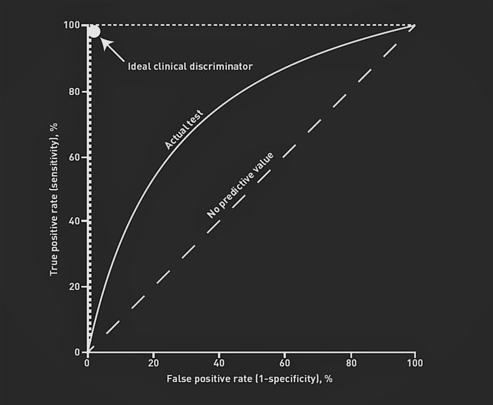

Chapter 2 Metrics for classification tasks
Understanding if a model is a good classifier or not requires a good comprehension of the predictions. We want to know the global effiency but some specific element too. Is classifier better in predicting one or the other class? What are the strength and weakness of the model? Can we be confident towards the results, haw can we know they are not due to chance?
In order to compare the performance’s models, we use different “metrics.” Our tools reliability is highly dependent on the data structure. In our case, the imbalanced sample of data classes has to be taken into account in order to find the metrics which allows to give a good evaluation of our models.
2.1 The foundation of the metrics: The Confusion Matrix
The confusion matrix presents the results obtained by a given classifier. This table provides the instances that were correctly classified (True Positive and True negative), and the instances that were wrongly classified (False Positive and False negative). From this table, we can calculate all the metrics described below
| Positive | Negative | |
|---|---|---|
| True | ||
| Positive | TP | FN |
| Negative | FP | TN |
2.2 Accuracy and error rate
\[error = \frac{FP + FN}{TN+TP+FP+FN}\]
\[accuracy = 1 - error\] The first metrics is obviously the global accuracy and its complement the error rate. It is the most frequently used to estimate the performance of a model. If accuracy is too low, we deduce that our learning algorithm is globally inefficient. However In the context of imbalanced data set, accuracy is not suitable. Indeed, because of the massive representation of the negative class, and as the classifiers failed to identify the positive class, we reach a high value of accuracy. For instance, if only 10% of the cases belong to the positive class and the classifiers predicts all cases as negative, accuracy will be at 90%. This is worthless when users objectives is to predict the rare cases.
To reflect more closely the users needs and priorities, several performance measure exist.
2.3 True Positive rate
\[TP_{rate} = \frac{TP}{TP+FN} = \frac{TP}{P_{real}}\]
Also called sensitivity, recall or detection power. I personally prefer the term detection power because it is more explicit. It is the ratio of the value predicted as positive and which are actually positive among all the real positive. This is the ability of our classifier to detect the positive cases.
2.4 True Negative and False positive rate
Also called specificity. It is the ratio of the value predicted as negative and which are actually negative among all the real negative case.
\[TN_{rate} = \frac{TN}{TN+FP}\]
I prefer its complement, the False positive rate, also called False alarm. Indeed, the term “False alarm” is more relevant than specificity.
\[FP_{rate} = \frac{FP}{TN+FP} = 1 - TN_{rate}\] TPrate (detection power) and FP rate (False alarm) are often quote in the literature as benefits and costs, respectively. These terms refers to a central point of our problematic. Indeed, a key point to find good remedies is to make a trade-off between what it cost in terms of False alarm and the benefits gained in terms of detection power.
2.5 Positive prediction value : Precision
\[PP_{value} = \frac{TP}{TP+FP} = \frac{TP}{P_{pred}} \]
The precision measures the rate of True positive among all cases predicted as positive.
2.6 F-measure
The F-measure is a combination of both precision and recall. This metric value is high when both recall (a measure of completeness) and precision ( a measure of exactness) are high. Hence, this metrics is particulary suitable on predicting the case that matter to the user.
\[F_\beta = \frac{(1+\beta^2) \times recall \times precision}{\beta^2 \times recall + precision}\] Beta is a coefficient to adjust the weight of recall against precision. In this paper, we choose a value of 1 which give the same weights to recall and precision.
2.7 Kappa
\[K = \frac{P_{agree}-P_{chance}}{1-P_{chance}}\]
\[P_{agree} = \frac{TP + FN} {number \ of \ cases} \] \[P_{chance} = \frac{P_{pre} \times P_{act}}{number \ of \ cases^2}+\frac{N_{pre} \times N_{act}}{number \ of \ cases^2}\]
Kappa is a very interesting metrics in context of imbalanced datas. The calculation is based on the difference between how much agreement(positive) is actually present (“observed”) compared to how much positive would be expected to be present by chance alone (“expected”). We want to know how different the observed positive are from the expected. Kappa is a measure of this difference(McHugh 2015).
| score | app |
|---|---|
| < 0 | Less than chance agreement |
| 0.01-0.20 | slight agreement |
| 0.21– 0.40 | Fair agreement |
| 0.41–0.60 | Moderate agreement |
| 0.61–0.80 | Substantial agreement |
| 0.81–0.99 | Almost perfect agreement |
2.8 ROC Curve
A receiver operating characteristic curve, or ROC curve, is a graphical plot that illustrates the diagnostic ability of a binary classifier system as its discrimination threshold is varied.
The ROC curve is created by plotting the true positive rate (TPR) against the false positive rate (FPR) at various threshold settings.
